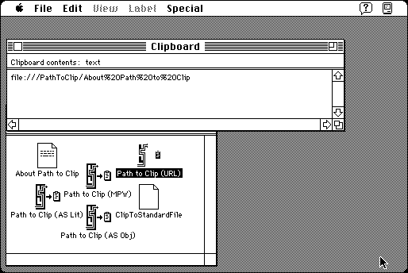

Download
PathToClip.zip (90K) Path to Clip 2.0d1 repackaged into a zipped hfs disk image and checksum file. The disk image can be mounted with Mini vMac.
PathToClip.hqx (123K) Path to Clip 2.0d1 in the original format.
copyright: Lawrence D'Oliveiro
mod date: Jul 9, 1998
license: freeware
from url :
LDO’s Software
"Simply drop a file or folder on it, and it will copy the full pathname, to the Clipboard, in one of 9 different quoting styles suitable for pasting into AppleScript scripts, URLs or MPW commands."

If you find these downloads useful, please consider helping the Gryphel Project, which hosts them.
Here are the md5 checksums for the downloads, signed with Gryphel Key 5:
--------- GRY SIGNED TEXT --------- 51d2a1a6da27bf300e4f4c11878abc44 PathToClip.zip ea72777481220c6abd2aa21f1ba85dd8 PathToClip.hqx ------- BEGIN GRY SIGNATURE ------- Gry/4Xa8CFcUzxdN/KVHg2sqoPdlFBDfrzoyflY4mVCectR6C7MwBTzBEE1RiW8D ovh/jMkWReHB1WXaB2Pt+yvxL42sLeNnB1BkrWKuF3gJAqsCcZXKyAL919EUVYuU T5PSryzX8S33u7Pl15sVeUDS+S+NCWwH7Q9/mHFY1hlsBCBVA7gD1OdYDezGs8ig -------- END GRY SIGNATURE --------